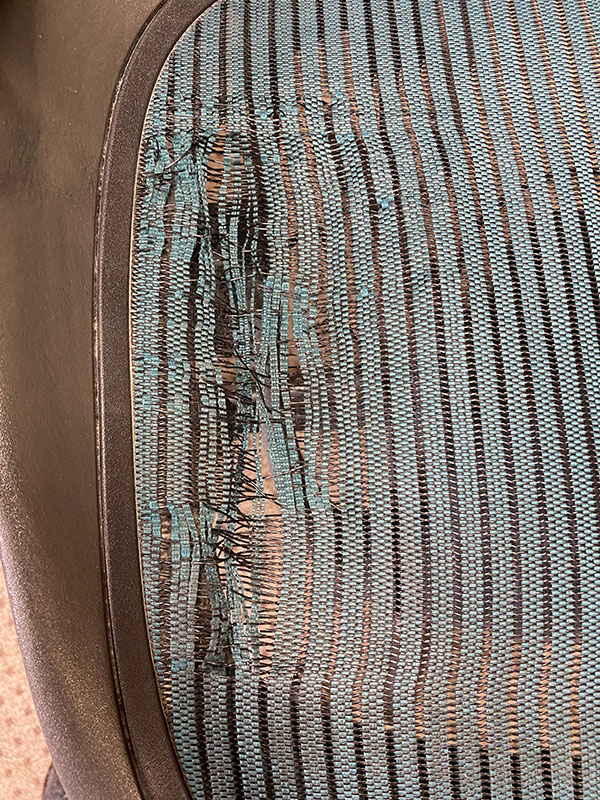
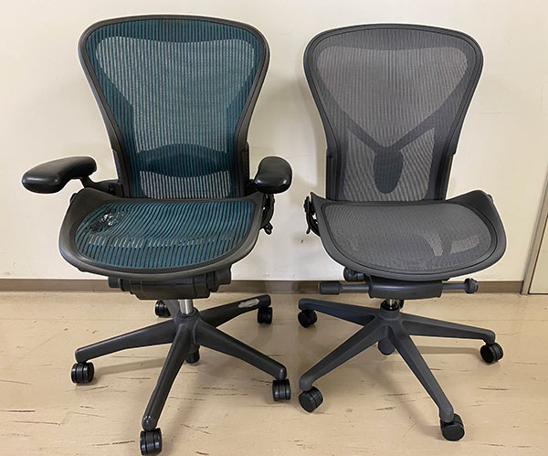
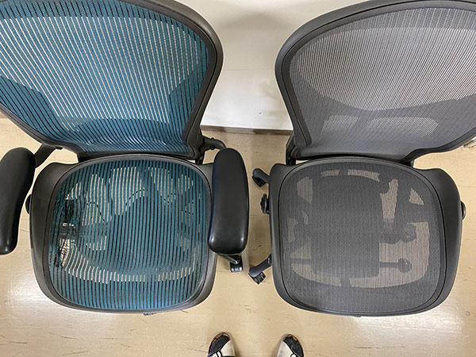
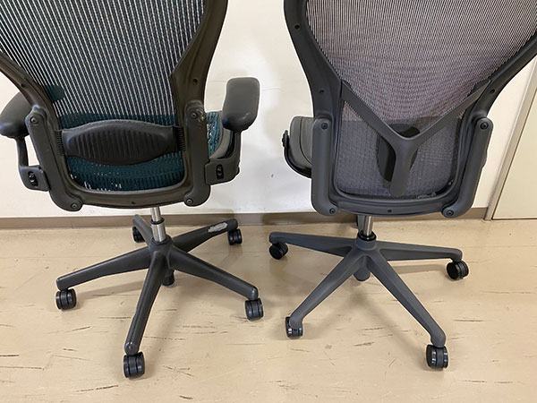

アーロンチェアついに寿命・交換
名古屋時代から使っていたアーロンチェアがついに寿命を迎えました．
座ったら，”ビリビリビリ”と音がして座面のメッシュが破けました．

まあ，名古屋→仙台→大阪，と２０年近く利用していたのでご苦労さま，でしょう．
本体は，１２年保証のようですが．．．
座面の交換，本体ごと種類，も考えましたが，リクライニングなどの機能もおかしくなっているので，買い換えることにしました．
このシートのおかげで，ほとんどがデスクワークの毎日でしたが腰痛にも見舞われず，快適な生活を過ごすことができました．
他の製品も調べましたが，良さげなものは国産でもほぼ同価格．なのでアーロンチェアにすることにしました．
難点は高いこと．．．同レベルだと２０万を超えてしまう．．．
ということで，アーロンチェアライト，にすることに．これなら半分程度の値段ですし．
機能的には，前傾チルト，肘掛けがない程度，腰部のサポートも簡易型のようです．．

早速届きました，ダンボールにそのまま入って来たのにはびっくり．
てっきりこちらで組み立てるものかと思いましたが．
若干サイズは小さいのかな？

メッシュ形状も異なりますね，時代の違いかもしれませんが．

腰の部分のサポートもだいぶ違います．
さて，納品されてまだ数日ですが，やはり快適です．
ただ，ちょっと前傾姿勢が強いかな？という感じ．